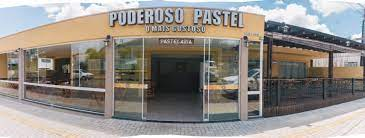
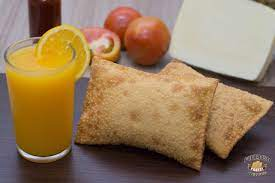
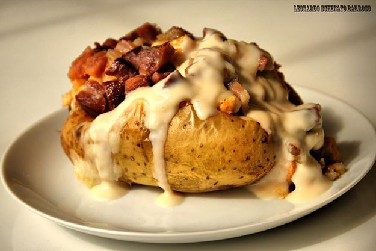

Não tema meu amigo! Irati possui muuuuuuitos lugares bons pra se comer, falarei apenas dois, e te digo, vale a pena vir e conhecer onde mais se pode encher a barriga de comida boa.
Sabe aquela pastel crocante, gigante, e beeem recheado? É esse. Cara só de falar me dá fome, recomendo muito, e é bem conhecido aqui pela cidade, por que será né?
 Huummmm, batata já é bão, agora imagina rechear ela de um monte de coisa gostosa, fica melhor ainda. É bem saboroso, vai lá meu filho, encher esse teu bucho.
Ah é! Pra deixar claro, não estou sendo pago pela propaganda hein, é apenas minha opinião como consumidor...
Agora se quiser voltar a página principal, clique no "clique aqui", se não quiser tudo bem, fique contemplando essa glamurosa batata: clique aqui